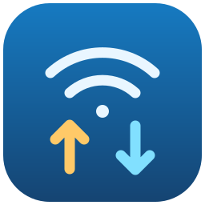

NetPeep A little network clarity.
Small footprint. A clearer picture.
Right now
↓ DOWNLOAD
↑ UPLOAD
No speed test required.
Waiting for native counters…
Your usage
TOTAL TRANSFERRED
—↓ DOWNLOADED
—↑ UPLOADED
—History starts when NetPeep is open.
Who’s using the network?
Observed processesChecking platform support…
| Application / process | ↓ Download | ↑ Upload | TCP connections |
|---|
What NetPeep measures
Throughput is bytes transferred per second, not your connection’s maximum speed. Adapter counters include local network traffic and protocol overhead. Auto uses likely physical adapters; select one adapter when using a VPN to avoid double counting. No traffic is recorded while NetPeep is quit or the computer sleeps.
Usage periods follow your computer’s local calendar; weeks start Monday. Samples crossing a boundary are assigned to the day they arrive. Per-process samples are best effort and never reconciled to adapter totals. VPNs, helper processes, short connections and shared system services limit attribution. Windows byte counts cover sampled established IPv4 TCP connections only; UDP/QUIC and IPv6 are excluded. An unavailable value is shown as —, never as a measured zero.
The Windows taskbar meter shows upload above download on a transparent background. Uncheck Pin to taskbar to drag it along the taskbar, then pin it again. You can also use Unlock meter to move in NetPeep’s tray menu. Pinned readings let clicks pass through to Windows. Position is saved. This is an overlay on the primary taskbar; it does not reserve space for itself. Move it to an empty section if it overlaps another icon. Closing the dashboard keeps monitoring active; Quit from the tray menu. macOS shows rates in its menu bar.